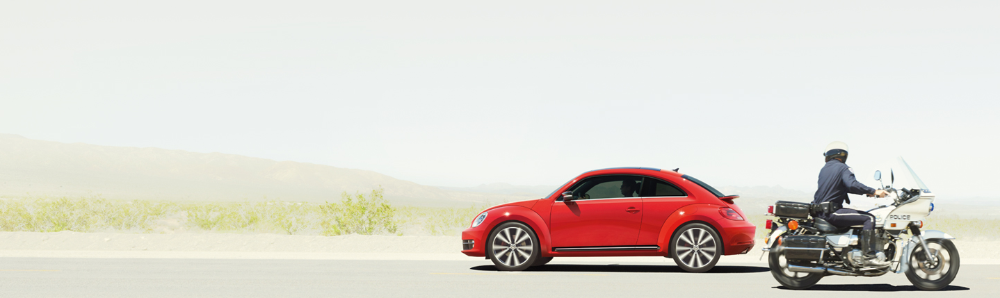
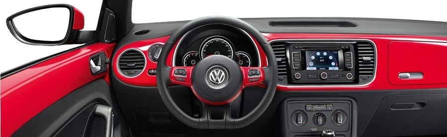

Home sweet home.
For the new Beetle's interior, we've combined retro-inspired elements with modern functionality, creating a space that's as nostalgic as it is cutting-edge. Step inside, and you'll immediately notice the attention to detail. From the iconic dashboard to the vintage-inspired gauges, every element has been carefully crafted to evoke the spirit of the original Beetle while offering all the comforts of contemporary design.
Sink into the plush seats, upholstered in premium materials for a luxurious feel. With ample legroom and headspace, passengers can relax and enjoy the ride, whether it's a quick trip around town or a cross-country adventure. But it's not just about looks—the new Beetle's interior is packed with technology to enhance your driving experience. Stay connected with seamless smartphone integration, allowing you to access your favorite apps and music with ease. And with advanced safety features, you can drive with confidence, knowing that you and your passengers are protected on every journey. Whether you're a longtime fan of the Beetle or discovering its charm for the first time, the new interior is sure to delight. It's a blend of nostalgia and innovation, creating a space that's both timeless and modern—a true reflection of the Beetle's enduring appeal.

Experience the epitome of comfort, style, and technology with the 2013 Beetle interior. Crafted with premium materials and iconic design elements, it offers a luxurious sanctuary on every journey. From spacious seating to advanced technology and safety features, the Beetle interior is designed to elevate your driving experience. Personalize your ride with available customization options and embrace the perfect fusion of nostalgia and innovation. Discover the joy of driving in the 2013 Beetle—a true icon reimagined for the modern era.